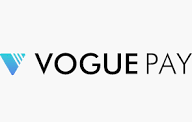

Merchant education
Built a body of useful articles and FAQs around questions merchants needed answered.

Fintech · Internal operating roleInside VoguePay, Wole led buyer-education and visibility work designed to make an early payments product easier for SMEs to understand and trust.
The founder situation
Payments involve questions about use, trust, fees, setup and support. The work turned recurring merchant questions and internal expertise into a public education layer that could help people understand the platform before and after a commercial interaction.
What Wole helped build
Built a body of useful articles and FAQs around questions merchants needed answered.
Made product and customer knowledge available beyond one-to-one explanations and support conversations.
Connected the company story to external platforms and executive visibility.
Created material that could support discovery, merchant understanding and continued education.
The operating record
The article, FAQ and view figures describe the education work. Merchant scale and the $137m peak monthly processed record are wider VoguePay operating context and are not attributed to content or marketing alone.
“Oluwole led the content initiatives that successfully launched VoguePay as a first-choice online payment provider for SMEs in Nigeria back then. At TechPoint, I worked with him to capture the VoguePay story and watched him drive brand exposure and facilitate visibility for the company’s C-suite.”
 Adewale YusufFounder, Techpoint Africa · Co-founder & CEO, AltSchool Africa
Adewale YusufFounder, Techpoint Africa · Co-founder & CEO, AltSchool AfricaWhat this means for a founder
A founder should not need to personally explain the product in every serious conversation. Kryssen can help identify the buyer questions, extract the approved expertise and turn it into content, product marketing and discovery assets the business can reuse.
Talk to us